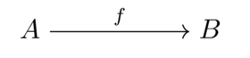

Теория категорий
Многие понятия в Haskell позаимствованы из теории категорий, например это функторы, монады. Теория категорий – это скорее язык, математический жаргон, она настолько общая, что кажется ей нет никакого применения. Возможно это и так, но в этом языке многие сущности, которые лишь казались родственными и было смутное интуитивное ощущение их близости, становятся тождественными.
Теория категорий занимается описанием функций. В лямбда-исчислении основной операцией была подстановка значения в функцию, а в теории категорий мы сосредоточимся на операции композиции. Мы будем соединять различные объекты так, чтобы структура объектов сохранялась. Структура объекта будет определяться свойствами, которые продолжают выполнятся после преобразования объекта.
Категория
Мы будем говорить об объектах и связях между ними. Связи принято называть “стрелками” или “морфизмами”. Далее мы будем пользоваться термином стрелка. У стрелки есть начальный объект, его называют доменом (domain) и конечный объект, его называют кодоменом (codomain).
В этой записи стрелка f соединяет объекты A и B, в тексте мы будем писать это так f:A→B, словно стрелка это функция, а объекты это типы. Мы будем обозначать объекты большими буквами A, B, C, …, а стрелки – маленькими буквами f, g, h, … Для того чтобы связи было интереснее изучать мы введём такое правило:

Если конец стрелки f указывает на начало стрелки g, то должна быть такая стрелка f;g, которая обозначает составную стрелку. Вводится специальная операция “точка с запятой”, которая называется композицией стрелок: Это правило говорит о том, что связи распространяются по объектам. Теперь у нас есть не просто объекты и стрелки, а целая сеть объектов, связанных между собой. Тот факт, что связи действительно распространяются отражается свойством:
Связи между объектами можно трактовать как преобразования объектов. Стрелка f:A→B – это способ, с помощью которого мы можем перевести объект A в объект B. Композиция в этой аналогии приобретает естественную интерпретацию. Если у нас есть способ f:A→B преобразования объекта A в объект B, и способ g:B→C преобразования объекта B в объект C, то мы конечно можем, применив сначала f, а затем g, получить из объекта A объект C.
\[id_A : A \rightarrow A\]
Когда мы думаем о стрелках как о преобразовании, то естественно предположить, что у нас есть преобразование, которое ничего не делает, как тождественная функция. В будем говорить, что для каждого объекта \(A\) есть стрелка \(id_A\), которая начинается из этого объекта и заканчивается в нём же.
\[id_A : A \rightarrow A\]
Тот факт, что стрелка \(id_A\) ничего не делает отражается свойствами, которые должны выполняться для всех стрелок:
| \(id_A \:\mathbf{;}\:f\) | \(=\) | \(f\) |
| \(f \:\mathbf{;}\:id_A\) | \(=\) | \(f\) |
Если мы добавим к любой стрелке тождественную стрелку, то от этого ничего не изменится.